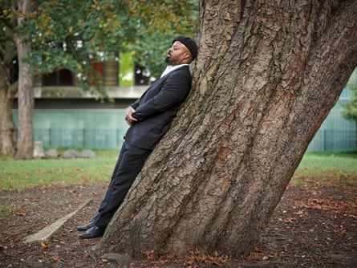

More than 5,000 people from across the UK arrived in Westminster on Wednesday to meet their MPs and demand urgent climate action to protect their communities.
The mass lobby is one of the largest to date. The constituents, including parents and pensioners, doctors, teachers, farmers and youth campaigners, have arranged to lobby at least 500 MPs, about 80% of the total.
Before the event, a giant image was projected on to the white cliffs of Dover, stating “89% of people want climate action”. The Guardian reported in April on the climate “silent majority” – 89% of people around the world want more to be done but mistakenly assume that few people share their view.
The mosaic image, featuring a green heart, was created from 1,500 photos shared by people to illustrate what they want to protect.
The mass lobby and image were organised by the Climate Coalition , a network of more than 120 UK organisations representing more than 22 million people, including the National Trust, the RSPB and the Women’s Institute. MPs will be asked to secure a green future to cut energy bills and create jobs, restore nature and help the communities hit hardest by climate change, in the UK and around the world.
New polling data shared with the Guardian provides further evidence of the climate silent majority, with many British people backing net zero goals but just one in 10 saying they regularly share their climate views.
Helen Meech, the executive director of the Climate Coalition, said: “Right across the UK, people are stepping up to protect the things they love, from clean air and green spaces to secure jobs and warm homes. This is one of the biggest democratic moments for climate and nature in years and a chance to show that acting for our future is not just popular, it’s essential.”
Charlotte Howell, a co-director of Parents for Future, said: “As parents, our greatest priority is to keep our children safe and healthy, right now and in the future. We are making it clear to MPs that climate action isn’t optional, it’s critical.”
Tanya Steele, the WWF chief executive, said: “Today’s mass lobby of MPs must be a turning point, a moment to show our leaders that we, their constituents, want to live in a country where people and nature can thrive together.”
The mass lobby was supported by dozens of public figures including the broadcasters Konnie Huq and Stephen Fry, the actors Brian Cox, David Harewood and Bonnie Wright and the writers Ben Okri and Mark Haddon. Okri contributed a photo to the Dover image of a favourite tree, felled by a storm. “The destruction of forests across the world is a silent modern tragedy,” he said.
Ben Okri and his family ‘adopted this tree as a family friend. We were saddened when it died. So we keep alive its spirit.’Photograph: Marcus Lyon
The mosaic includes a photo from a parks manager in Antrim who said nature was her sanctuary, one from an academic in Southsea who said the seafront held many happy family memories, and one from a vicar in London of his community garden.
Keir Starmer sent a message to those lobbying their MPs, saying: “The issues you are discussing today are central to my commitment to tackling climate change, both here in the UK and around the world.”
He said the government was “doubling down” on Britain’s clean energy strengths, spending billions to make homes more energy efficient and funding climate adaptation for millions of people around the world. “Together, these actions reflect our unwavering commitment to climate action, energy security and social justice,” he said.
A survey by Climate Barometer found that only one in 10 British people say they regularly express their climate views. About two-thirds of Britons support the 2050 net zero target, local solar parks and local windfarms, but half of those supporters remain either silent or quiet on climate issues, the survey found.
Dr Niall McLoughlin, a co-director of Climate Barometer, said one cause of this hesitation could be “perception gaps”, where people believe their views on climate issues are not shared by others. “That isn’t the case at all,” he said.
For example, just 16% of people thought there would be majority support for new pylons and power lines to carry renewable energy locally, when in reality 60% of the public support this.
“It’s now crucial to break this spiral of silence if we want to make progress on climate change,” McLoughlin said. “Sharing support for climate action with people we meet can play a key role in driving forward change. There’s no time to waste – public figures and politicians should show real leadership.”
Survey findings released in June from 13 countries representing almost half the world’s population found that 77% of people are more willing to support a political candidate who prioritises taxing polluting companies such as oil, gas and coal firms and the super-rich, who have huge carbon footprints .